Sensors
Temperature Sensors
Thermocouples
Operation: Measures temperature based on the voltage difference between two different metals.
Applications: Industrial processes, HVAC systems.
Advantages: Wide temperature range, durable.
Disadvantages: Requires reference junction.
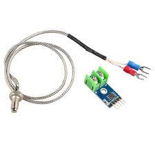
Thermistors
Operation: Measures temperature based on resistance changes in ceramic materials.
Applications: Automotive, household appliances.
Advantages: High sensitivity, precise.
Disadvantages: Limited temperature range.
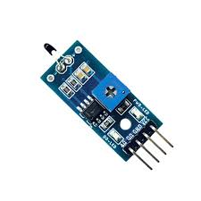
RTDs (Resistance Temperature Detectors)
Operation: Measures temperature based on the resistance change in a metal.
Applications: Industrial applications, laboratories.
Advantages: Accurate, stable.
Disadvantages: Expensive, requires current source.
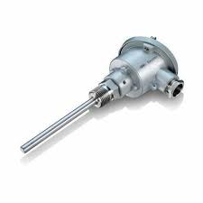
Pressure Sensors
Piezoelectric Sensors
Operation: Measures pressure based on the electric charge generated by a piezoelectric material under mechanical stress.
Applications: Industrial equipment, medical devices.
Advantages: High sensitivity, fast response.
Disadvantages: Can be affected by temperature changes.
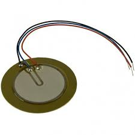
Capacitive Pressure Sensors
Operation: Measures pressure based on the capacitance change between two surfaces.
Applications: Weather stations, consumer electronics.
Advantages: High accuracy, low power consumption.
Disadvantages: Can be affected by humidity.
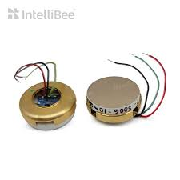
Proximity Sensors
Inductive Proximity Sensors
Operation: Detects metal objects based on the change in inductance.
Applications: Manufacturing, automation.
Advantages: Durable, reliable.
Disadvantages: Only detects metal objects.
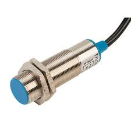
Capacitive Proximity Sensors
Operation: Detects objects based on the change in capacitance.
Applications: Level detection, material handling.
Advantages: Can detect non-metallic objects.
Disadvantages: Affected by environmental factors like humidity.
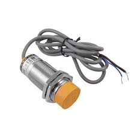
Ultrasonic Sensors
Operation: Measures distance based on the time it takes for an ultrasonic pulse to reflect back from an object.
Applications: Robotics, automotive parking systems.
Advantages: Can detect a wide range of materials.
Disadvantages: Can be affected by temperature and air turbulence.
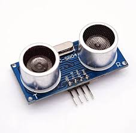
Motion Sensors
Passive Infrared (PIR) Sensors
Operation: Detects motion based on the infrared radiation emitted by objects.
Applications: Security systems, automatic lighting.
Advantages: Low cost, low power consumption.
Disadvantages: Limited detection range, affected by environmental factors.
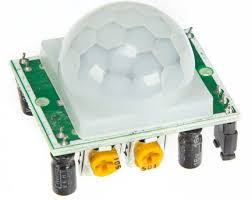
Accelerometers
Operation: Measures acceleration based on the change in capacitance.
Applications: Mobile devices, automotive systems.
Advantages: High sensitivity, wide range of applications.
Disadvantages: Can be affected by temperature changes.
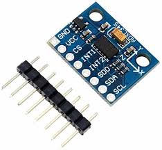
Gyroscopes
Operation: Measures angular velocity based on the Coriolis effect.
Applications: Navigation systems, consumer electronics.
Advantages: High precision, reliable.
Disadvantages: Complex and expensive.
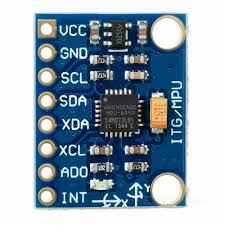
Optical Sensors
Photodiodes
Operation: Converts light into an electrical current.
Applications: Light meters, communication devices.
Advantages: High speed, sensitive.
Disadvantages: Can be affected by ambient light.
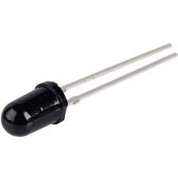
Phototransistors
Operation: Converts light into an electrical current, with amplification.
Applications: Light detection, optoisolators.
Advantages: High sensitivity, robust.
Disadvantages: Slower response time compared to photodiodes.

LIDAR (Light Detection and Ranging)
Operation: Measures distance by illuminating the target with laser light and measuring the reflection time.
Applications: Autonomous vehicles, topography.
Advantages: High accuracy, long-range detection.
Disadvantages: Expensive, can be affected by weather conditions.
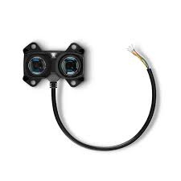
Chemical Sensors
Gas Sensors
Operation: Detects the presence of gases based on changes in electrical properties.
Applications: Air quality monitoring, industrial safety.
Advantages: Sensitive, specific.
Disadvantages: Can be affected by humidity and temperature.
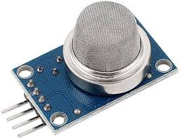
pH Sensors
Operation: Measures the acidity or alkalinity of a solution based on the voltage difference between two electrodes.
Applications: Water quality monitoring, chemical processing.
Advantages: Accurate, reliable.
Disadvantages: Requires calibration, can be affected by temperature.
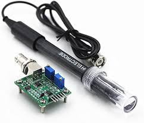
Magnetic Sensors
Hall Effect Sensors
Operation: Measures magnetic fields based on the Hall effect.
Applications: Automotive sensors, position sensing.
Advantages: Durable, accurate.
Disadvantages: Limited to detecting magnetic fields.
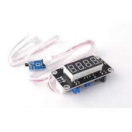
Magnetoresistive Sensors
Operation: Measures magnetic fields based on the change in resistance of a material.
Applications: Compass modules, current sensing.
Advantages: High sensitivity, wide range.
Disadvantages: Can be affected by temperature changes.
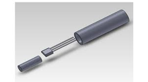
Humidity Sensors
Capacitive Humidity Sensors
Operation: Measures humidity based on the change in capacitance.
Applications: HVAC systems, weather monitoring.
Advantages: High accuracy, low power consumption.
Disadvantages: Can be affected by contaminants.
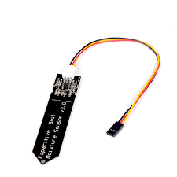
Resistive Humidity Sensors
Operation: Measures humidity based on the change in resistance.
Applications: Industrial applications, consumer electronics.
Advantages: Simple, low cost.
Disadvantages: Lower accuracy, can be affected by temperature.
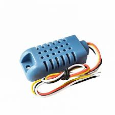
<--Back